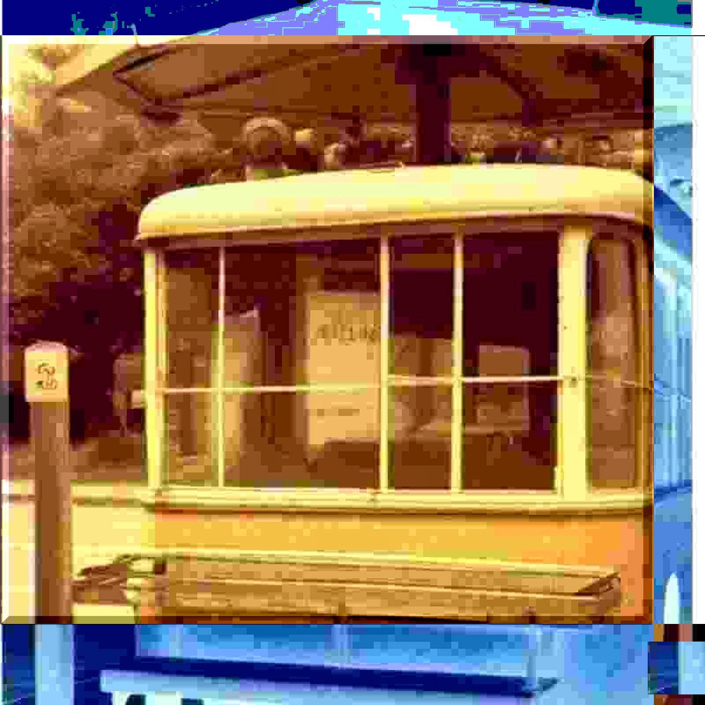

揺られて
lyrics
バスに揺られて 街に行く
整理券を
大事に握りしめ 街に行く
あの頃の僕
ガラスケースのカセット
ブラウン管のデモ眺め
100円のピストルを撃ちならす
少し急な階段
ゆっくり登っていた
置き去りにされたのは
あの日の僕だったのかも
あのバス停に もうバスはこない
at that busstop no buses stop
行く先なんて どこでもいいのに
どこでもよかったのに
バスに揺られて どこへ行く
整理券を
だいじに にぎって どこまでも
あの頃の僕
澄んだ青空 噴水の音
ベンチに座り
レモンケーキをかじる
色褪せた写真に
セピア色のかげ
置き去りにされたのは
ああ 今の僕 だったんだろう
あのバス停に もうバスはこない
at that busstop no buses stop
行く先なんて どこでもいいのに
どこへでもいけたのに
notes
バス停ってbusstopっていうらしい。そこにもうバスがストップしないって英語だとダジャレになるのかな？
at that busstop no buses stop.
うん、これが歌いたかっただけなんだ。あと、整理券という言葉。
バス、ブラウン管、ピストル、青い空とそう、もちろんブルーハーツからの借り物なんだけど、彼らのバスと違って、僕のバスはあくまで小さい頃のノスタルジー、ちょっとした冒険であり、しいてあげてもスクールバスとか集団行動のモチーフくらいとしてしか意味をもたせてない。つーか、あんな異常な完成度の歌詞とは並べないよ。
でもまさかブラウン管がなくなるなんてね。バスもすごく本数減っちゃってね。それでいて、なくなってほしいものは、まだなくなってないんだ。
まだ空はあの青いまんま。